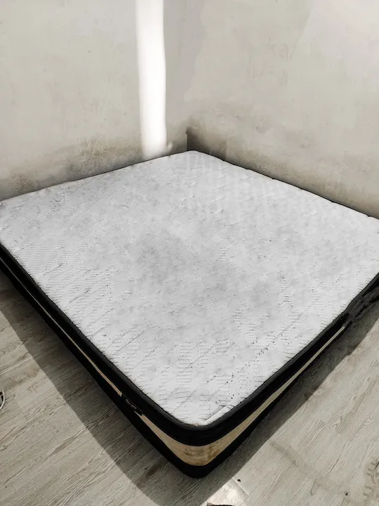

Cuci Soft Furniture Profesional,
Bebas Bakteri dan Tungau
Sofa, kasur, karpet, dan gordyn yang terlihat bersih belum tentu aman untuk keluarga Anda.
Kami bersihkan setiap serat dengan metode QDWC, garansi 5 hari, dan harga yang tertera jelas.
Bagus dan bersih sekali hasilnya. Sangat direkomendasikan.
Amy Chan, Jakarta
Sangat puas. Petugasnya ramah dan menjelaskan dengan detail.
Katrin Tobing, Bekasi
Cukup puas. Petugasnya ramah, wangi parfumnya juga kami suka.
Tea Aaron, BSD
Hasilnya bersih, bagus, dan dikerjakan dengan teliti.
Ulfah Nichi, Jakarta
Yang Tidak Terlihat di Sofa dan Kasur Anda
Permukaan yang bersih hanya satu sisi dari kenyataan. Di balik kain dan busa,
ada bagian rumah yang paling jarang disentuh, dan justru paling dekat dengan keluarga Anda.
10%
Bobot Bantal Berisi Tungau Mati
Pada bantal yang sudah dipakai lebih dari dua tahun, sepuluh persen bobotnya bisa berasal dari
tungau mati dan sisa-sisanya. Satu kasur sendiri bisa menampung 100.000 sampai 10 juta tungau
yang tidak pernah terlihat oleh mata.
Sumber: Cleveland Clinic Health
6 Bulan
Alergen Sudah Melewati Batas Gejala
Penelitian terhadap 60 kasur yang dipakai tanpa pernah dicuci menemukan kadar alergen tungau
sudah melewati batas yang memicu gejala setelah enam bulan pemakaian.
Sumber: Asian Pacific Journal of Allergy and Immunology, 2010
200.000
Bakteri per Inci Persegi Karpet
Rata-rata setiap inci persegi karpet menampung sekitar 200.000 bakteri. Jumlah itu tidak pernah
terasa karena yang terlihat mata hanya permukaan yang tampak bersih.
Sumber: Philip Tierno, NYU Langone Medical Center
Asma
Tungau Pemicu Asma pada Anak
Paparan tungau dapat memicu asma pada anak yang sebelumnya tidak mengalami gejala asma.
National Academy of Sciences menyebut tungau sebagai satu-satunya alergen inhalasi dengan bukti
kausal terhadap perkembangan asma.
Sumber: US Environmental Protection Agency
Semua Layanan, Bukti Hasil Nyata
Geser gambar untuk melihat kondisi sebelum dan sesudah pencucian.
Setiap hasil di bawah ini berasal dari pekerjaan yang kami kerjakan di Jabodetabek.

GeserSebelumSesudah
Cuci Kasur
Mulai dari Rp150.000
Kasur yang jarang dicuci menyimpan tungau, keringat, dan sisa kulit di dalam busa.
Kami bersihkan sampai ke lapisan terdalam lalu ekstraksi maksimal supaya cepat kering.
Sofa jadi tempat duduk keluarga setiap hari. Keringat, minyak tubuh, dan sisa makanan
menumpuk di sela kain dan lipatan sofa. Kami bersihkan setiap serat dan hentikan sumbernya.
Karpet dan gorden adalah penyerap debu paling baik di rumah. Keduanya perlu penanganan
ekstra agar seratnya tidak rusak dan warnanya tidak pudar setelah dicuci.
Stroller dan car seat adalah tempat anak bersentuhan langsung setiap hari.
Pastikan kebersihannya terjaga dari bakteri dan kuman sebelum anak kembali memakainya.
QDWC atau Quarter Deep Wet Cleaning membagi setiap barang menjadi empat wilayah kerja
secara sistematis. Setiap wilayah dicuci dengan konsentrasi penuh, lalu diekstraksi secara maksimal.
Empat Wilayah Kerja
Wilayah 1
Wilayah 2
Wilayah 3
Wilayah 4
Keunggulan QDWC
Pencucian lebih terkonsentrasi dan terfokus pada setiap wilayah kerja
Penggunaan air lebih sedikit dibanding pencucian basah biasa
Ekstraksi lebih maksimal sehingga pengeringan jauh lebih cepat
Minim kebecekan area selama proses pencucian
Delapan Tahap Pencucian
01
Pemvakuman Awal
Sebelum dicuci, seluruh permukaan divakum untuk mengangkat debu dan kotoran kering.
02
Penyemprotan Pembersih
Cairan pembersih disemprotkan pada satu per empat area sampai bahan terbasahi dan siap disikat.
03
Penyikatan
Bagian yang sudah basah disikat untuk meluruhkan kotoran yang menempel di serat bahan.
04
Pembilasan
Area dibilas dengan larutan pewangi sekaligus anti kuman untuk membersihkan dan mensterilkan.
05
Penghisapan Vakum
Vakum menyedot kotoran dan sisa air supaya area cepat kering dan hasilnya maksimal.
06
Pembersihan Rinci
Sisa kotoran yang masih menempel dibersihkan lebih rinci sebagai penyelesaian tiap wilayah.
07
Pengulangan
Tahap 2 sampai 6 diulangi pada setiap bagian, dari bagian pertama sampai keempat.
08
Finishing Akhir
Seluruh permukaan dibilas dan divakum sekali lagi sebagai langkah terakhir sebelum dikeringkan.
Pilih Cara Booking yang Nyaman untuk Anda
Booking Via Apps
Proses booking transparan tanpa tawar menawar. Harga langsung terlihat di aplikasi,
jadi Anda tahu persis berapa biaya sebelum pesanan dikirim.
Cakupan penuh di Jakarta, Kota Bekasi, dan Kabupaten Bekasi.
Pertanyaan yang Sering Diajukan
Durasi pencucian bervariasi tergantung jumlah dan jenis barang. Rata-rata untuk satu
kasur ukuran Queen membutuhkan waktu sekitar 45 sampai 90 menit. Durasi juga bergantung
pada kesulitan noda, kualitas bahan, dan ruang gerak saat pencucian di dalam ruangan.
Ya. Kami memberikan garansi pencucian ulang jika muncul bau apek atau jamur dalam
waktu 5 hari setelah pencucian.
Kami melayani area Jabodetabek yang meliputi Jakarta, Bogor, Depok, Tangerang, dan Bekasi.
Minimum order adalah Rp250.000 untuk setiap pencucian.
QDWC atau Quarter Deep Wet Cleaning adalah metode pencucian dengan membagi barang
menjadi 4 wilayah kerja. Pencucian lebih terkonsentrasi, penggunaan air lebih sedikit,
dan proses pengeringan jauh lebih cepat.
Tidak. Metode QDWC menggunakan proses ekstraksi per area yang maksimal sehingga barang
tidak terlalu basah dan waktu pengeringannya jauh lebih cepat.
Anda bisa booking melalui aplikasi booking kami di booking.indeepcleaningid.site
atau langsung chat WhatsApp admin kami.
Ya. Petugas kami datang langsung ke lokasi Anda sesuai jadwal yang telah disepakati.
Jangan Tunggu Sampai Keluhan Muncul
Furniture yang terlihat bersih belum tentu bebas bakteri dan tungau.
Keluhan biasanya baru muncul saat itu, dan memperbaikinya jauh lebih sulit
dibanding membersihkannya sekarang.